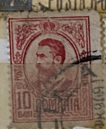
| SOURCE | TITLE| IMAGE MATCH | click to source page |
| HipStamp | Search "horn" in Europe > Romania / HipStamp | 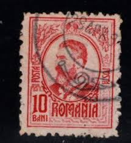 |
| eBay | Romania 1890-1935 classic 4pcs OFFSET+PERFORATION +PAPER FOLD, ERRORS MH | eBay | 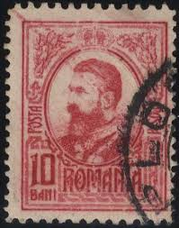 |
| Find Your Stamps Value | Value of Romania red 10 bani stamps | 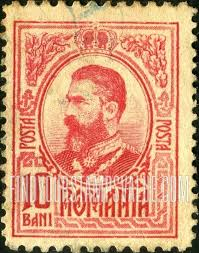 |
| Shutterstock | Russia Circa 1913 Stamp Printed Russia Stock Photo 114752011 | Shutterstock | 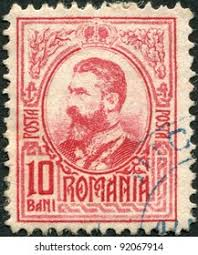 |
| Delcampe | Romania - BUCURESTI 1913, Regele FERDINAND cu decoratii, Uniforma ARMATA Romana, timbru | 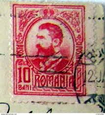 |
| Mintage World | Carol I of Romania | Mintage World | 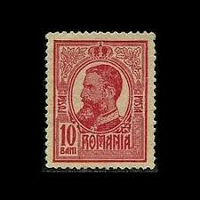 |
| eBay | ROMANIA STAMP 1898-1914 King Karl I 10B (KBX) | eBay | 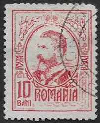 |
| Alamy | Carol I, King of Romania (1866-1914), postage stamp, Romania, 1908 Stock Photo - Alamy | 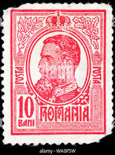 |
| Mercari | 1909 Romania (No.220) New | Mercari | 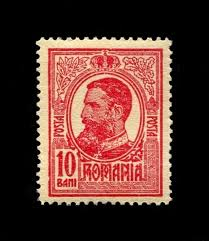 |
| Dreamstime.com | King Carol I - with King Ferdinand`s Monogram, Serie, Circa 1919 Editorial Photography - Image of march, ferdinand: 147738042 | 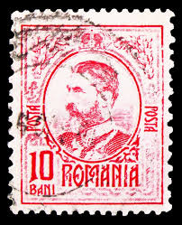 |
| Alamy | ROMANIA - CIRCA 1909: A stamp printed in the Romania, shows the King of Romania, Carol I, circa 1909 Stock Photo - Alamy | 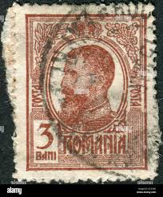 |
| Dreamstime.com | Rare Old Ancient Postage Stamp Printed in Romania with the Image of the Romanian King Carol I 1839-1914 Editorial Image - Image of personalities, postage: 166116490 | 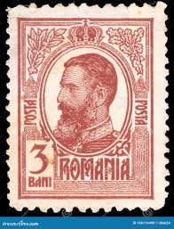 |
| Alamy | Portrait of King Carol I of Romania (1839-1914). Museum: PRIVATE COLLECTION. Author: Zehngraf, Johannes Stock Photo - Alamy | 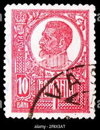 |
| eoptometry.com | Vintage European Philately Collection Romania 1976 Independence Stamp Collection - Complete Set Of Commemorative US Stamps 1976 Independence U.S. Complete Issue Stamp Collection | 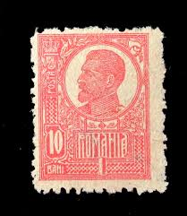 |
| Allnumis | Romania - Catalog de timbre | 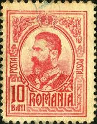 |
| HipStamp | DYNAMITE Stamps: Russia Scott #92 - USED | Europe - Russia & Soviet Union, General Issue Stamp / HipStamp | 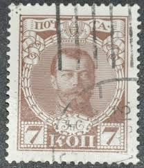 |
| Stamp Community Forum | Typography Stamps - Stamp Community Forum | 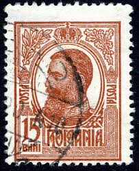 |
| All Numis | 15 Bani - Ferdinand I, 1918 - Romania - Stamp - 41785 | 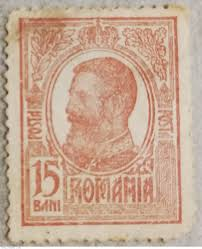 |
| eBay | Romania STAMPS 1908 KING CAROL I ERROR MH ROYAL POST 10 BANI | eBay | 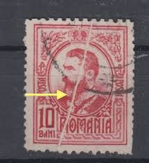 |
| Find Your Stamps Value | Value of posta romana 1 leu stamps | 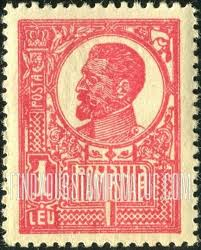 |
| allnumis.com | 10 Bani - Carol I of Romania (1839-1914), 1914 - Romania - Stamp - 44458 | 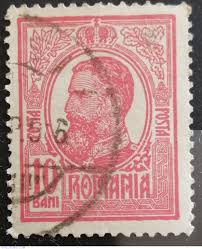 |
| Todocolección | rumania, romania, 3 lei, rey ferdinand, año 192 - Buy Antique stamps of Romania on todocoleccion | 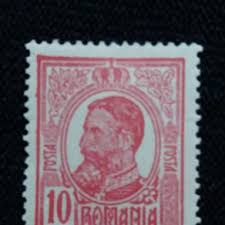 |
| eBay | Romania stamps 1918 King Carol I | eBay | 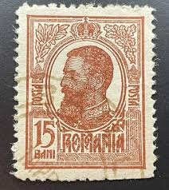 |
| eBay.de | Romania 1920 King Ferdinand ZIARISTI 15 BANI Journalists ERROR VARIETY | eBay.de | 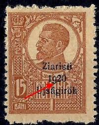 |
| HipStamp | Romania Stamps 1921 King Imperforate Gravure Used Postal History 10 Bani | Europe - Romania, Stamp / HipStamp | 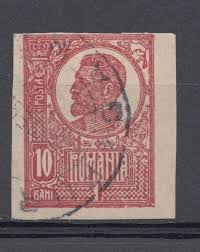 |
| eBay | Romania STAMPS 1909 KING CAROL I ERROR USED ROYAL POST 10 BANI SHORT CUT | eBay | 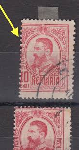 |
| eBay | 1920 King Ferdinand,CAP MARE/Definitive,Romania,Mi.253 y,White paper/Perf.C,MLH | eBay | 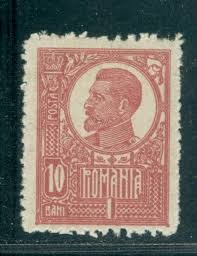 |
| Find Your Stamps Value | Value of romania 50 taxa de plata asistenta sociala stamps | 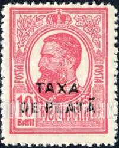 |
| Find Your Stamps Value | Value of posta romana 10 bani stamps | 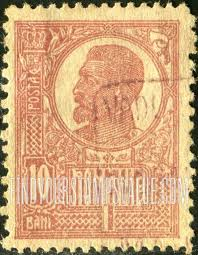 |
| Filatelia Ananias | Romania | 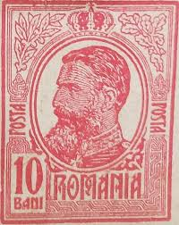 |
| HipStamp | Romania 1908 - Scott #208 * | Europe - Bulgaria, General Issue Stamp / HipStamp | 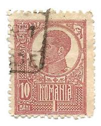 |
| Stamp Auction | Prices Realized | 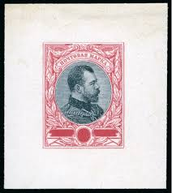 |
| Find Your Stamps Value | Value of posta romana 15 bani stamps | 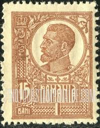 |
| ProBoards | Romania: Postmarks | The Stamp Forum (TSF) | 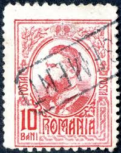 |
| allnumis.com | Stamps Catalog - List of stamps for 1909, Romania | 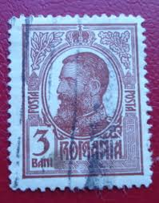 |
| eBay | 1908 Roumania 10 Bani Used Hinged Stamp | eBay | 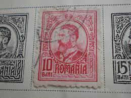 |
| Stamp Community Forum | Romania : 1908 To 1919 - Stamp Community Forum | 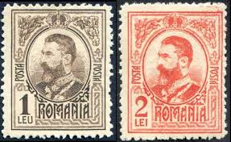 |
| allnumis.com | 10 Bani 1918, 1918 - Romania - Stamp - 38409 | 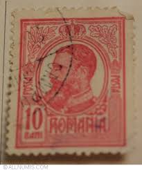 |
| Wikipedia | Timbr-taos - Wikipedia | 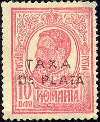 |
| lastdodo.com | 1917 Romanov dynasty (with revolution overprint) Stamp catalogue - LastDodo | 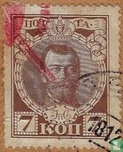 |
| lastdodo.fr | Ferdinand Ier de Roumanie [1865-1927] Catalogue de timbres - LastDodo | 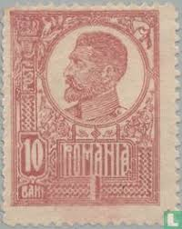 |
| Find Your Stamps Value | Value of king george v 1 penny red stamps | 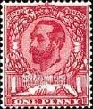 |
| lastdodo.com | Ferdinand I of Romania [1865-1927] Stamp catalogue - LastDodo | 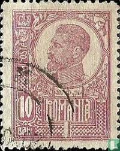 |
| eBay | Romania 1918 CLASSIC ovp PTT + 2 perforation errors FERDINAND used | eBay | 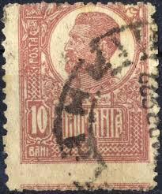 |
| MQL5 | The Smallest Coin in the World - Currency - 8 November 2015 - Traders' Blogs | 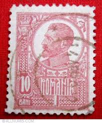 |
| ProBoards | Errors and Oddities | The Stamp Forum (TSF) | 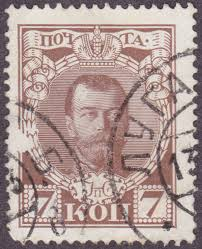 |
| chanandscott.com | 1913 Junk Issue, 4 cent carmine, Scott IM 206 | Chan & Scott | 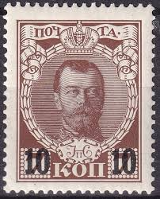 |
| HipStamp | RUSSIA; 1913 early Romanov used issue fine used 7k. value | Europe - Russia & Soviet Union, Stamp / HipStamp | 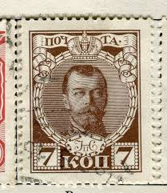 |
| Flickr | Postcard detail close-up (postage stamp 1915) | Catherine | Flickr | 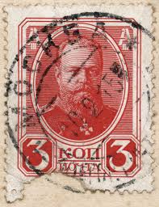 |
| United Archives | United Archives Image Agency | |
| eBay | Romania Stamp / 1920 / Scott 255 /Mi258 / King Ferdinand / / used | eBay | |
| Cherrystone Auctions | U.S. & Worldwide - June 15-16, 2011 - Lot #1294 | |
| Shutterstock | 9+ Hundred Dynasty Romanov Dynasty Royalty-Free Images, Stock Photos & Pictures | Shutterstock | |
| Shutterstock | Russian Empire 1913 January 2 7 Stock Photo 2335663087 | Shutterstock | |
| allnumis.com | Romania - Stamps Catalog | |
| ProBoards | Romania: 1920 - 1922 King Ferdinand Definitives | The Stamp Forum (TSF) | |
| eBay | Mint Never Hinged/MNH Red Romanian Stamps for sale | eBay | |
| ormsund.no | Aazon.co: Roania 6516-6521 (Coplete.Issue.) Unounted Int/Never Hinged ** NH 2011... | |
| Shutterstock | 2+ Thousand Russian Empire Crown Royalty-Free Images, Stock Photos & Pictures | Shutterstock | |
| eBay | Russian 1912 Easter greetings POSTCARD ( 140 x 90 mm.) | eBay |